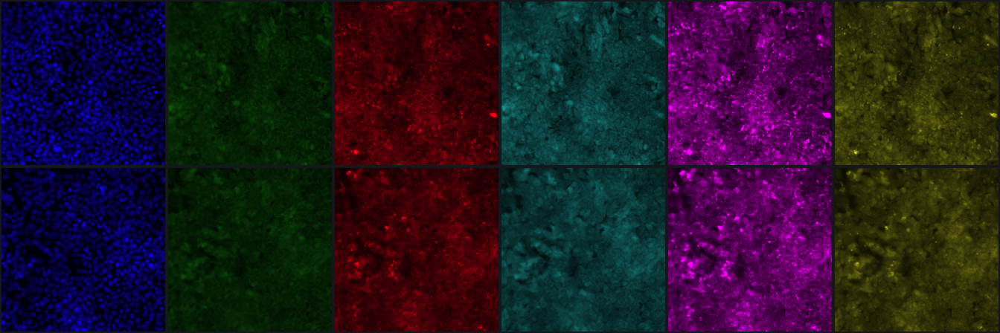
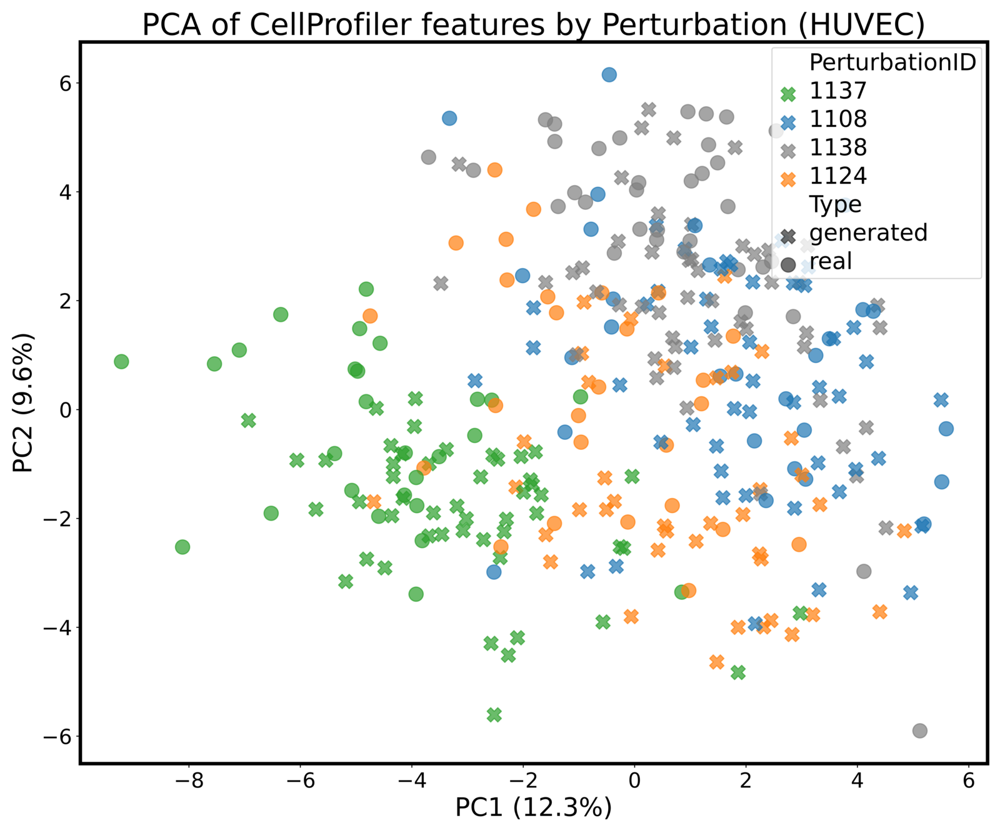
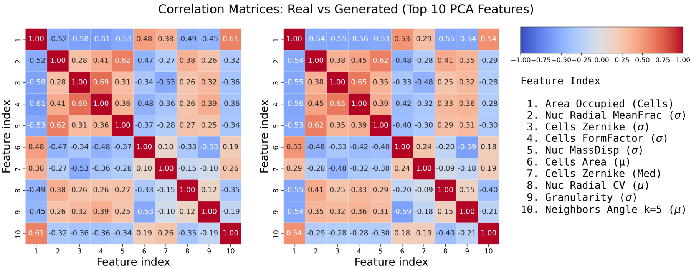
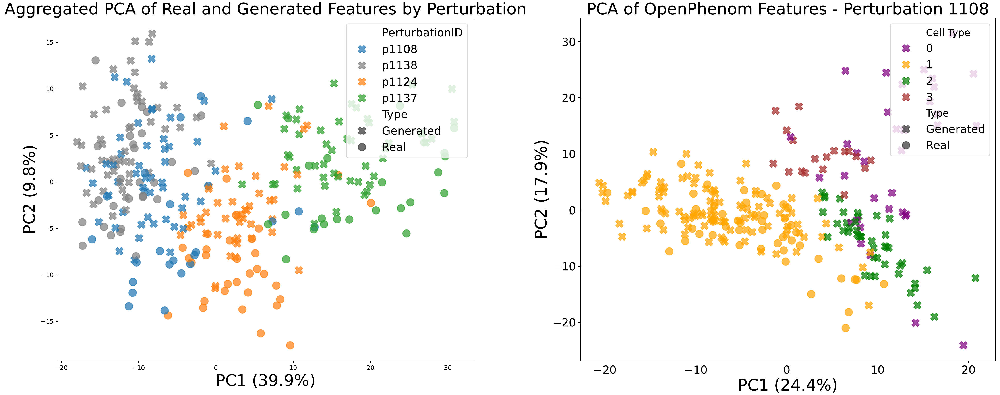

MorphGen: Controllable and Morphologically Plausible Generative Cell-Imaging
A diffusion model that synthesizes all six Cell Painting fluorescence channels jointly, aligned to a biological foundation model
MorphGen is a diffusion-based generative model for fluorescent microscopy that enables controllable generation across multiple cell types and perturbations. Unlike prior approaches that compress multichannel stains into RGB, MorphGen generates the complete set of six Cell Painting fluorescence channels jointly at 512×512 resolution, preserving per-organelle structure. It is trained with a representation-alignment loss matching its features to the phenotypic embeddings of the OpenPhenom foundation model. On RxRx1 (HUVEC, 50 perturbations) it attains an FID over 35% lower than the prior state of the art MorphoDiff, and generated images reproduce CellProfiler feature structure and population-level treatment effects measured in OpenPhenom feature space.
The goal: an in silico surrogate of cellular imaging
Simulating cellular responses to interventions in silico is a promising route to accelerate high-content image-based assays, which are central to drug discovery and gene editing (Demirel et al. 2025). This is a concrete step toward the broader vision of Virtual Cells (Bunne et al. 2024): generative instruments that can populate diverse cellular contexts and emulate the effects of genetic or chemical interventions. MorphGen focuses on phenotypic image generation under experimentally defined perturbations.
A standout high-content screening protocol is Cell Painting, which stains eight cellular compartments across six fluorescence channels (Demirel et al. 2025). The resulting morphological fingerprints cluster small molecules by mechanism of action, map gene function (Rohban et al. 2017), and capture disease-specific signatures for phenotypic drug discovery.
The authors argue that current image generators fall short of this vision in three ways (Demirel et al. 2025): (i) they operate at low resolution on outdated architectures (Palma et al. 2025); (ii) they collapse the six-channel fluorescence stack into lossy RGB, discarding biological detail; and (iii) they are restricted to a single cell type and modest datasets (Navidi et al. 2025). MorphGen targets all three.
What MorphGen does differently
MorphGen combines a frozen pretrained VAE with a latent diffusion model, adapted to multi-channel Cell Painting data (Demirel et al. 2025). Its design contributions, as stated in the paper, are:
- Organelle-level generation. MorphGen models native fluorescence channels directly, avoiding RGB conversion and preserving sub-cellular detail.
- Domain-aligned regularization. A representation-alignment loss adapted from REPA (Yu et al. 2025) is driven by embeddings of OpenPhenom (Kraus et al. 2024), a microscopy-specific foundation model, instead of generic vision features such as DINOv2.1
- Flexible conditioning. The latent space separates perturbation and cell-type factors, allowing controllable synthesis — for example, swapping the cell type while keeping the perturbation fixed.
- Scalable training. MorphGen is trained at full resolution on the entire RxRx1 dataset (Sypetkowski et al. 2023), spanning four cell types and over 125K images of resolution 512 \times 512.
1 In the original REPA setting, aligning SiT representations to DINOv2 was reported to yield over 17.5\times faster convergence; MorphGen keeps the same objective but substitutes the domain-specific OpenPhenom model.
Organelle-aware processing
Let \mathcal{X} \subset \mathbb{R}^{6 \times H \times W} be the space of six-channel Cell Painting images. Because the pretrained VAE encoder expects three-channel RGB input, each grayscale channel \mathbf{x}^{(c)} is stacked three times into \tilde{\mathbf{x}}^{(c)} \in \mathbb{R}^{3 \times H \times W} and encoded independently by the frozen encoder E_\text{VAE} into \mathbf{z}^{(c)} \in \mathbb{R}^{4 \times H' \times W'}. The six channel latents are concatenated into a shared latent for joint modeling:
\mathbf{z} = \operatorname{concat}\!\left(\mathbf{z}^{(1)}, \ldots, \mathbf{z}^{(6)}\right) \in \mathbb{R}^{24 \times H' \times W'}.
Encoding each organelle channel separately while modeling them jointly preserves channel-wise interpretability and cross-organelle dependencies (Demirel et al. 2025).
Joint diffusion with a Scalable Interpolant Transformer
The concatenated latent is the input to a latent diffusion model parameterized by a Scalable Interpolant Transformer (SiT) (Ma et al. 2024), which operates on flattened token sequences with global self-attention. Conditioning combines learnable perturbation, cell-type, and timestep embeddings into a vector \mathbf{c} = \mathbf{e}_p + \mathbf{e}_{ct} + \mathbf{e}_t used as cross-attention context. Following the EDM formulation (Karras et al. 2022), the model predicts the velocity of the diffusion trajectory and is trained with a mean-squared-error objective \mathcal{L}_{\text{diff}} against the ground-truth velocity.
Conditioning on perturbation and cell type as separate learnable embeddings is what lets MorphGen recombine factors — e.g. hold a perturbation fixed and vary the cell line. Because these embeddings are learned from images, MorphGen can use all RxRx1 plates, whereas MorphoDiff discards unlabeled perturbations.
Aligning to biological representations
To improve biological fidelity, MorphGen adopts representation-alignment regularization (REPA) (Yu et al. 2025), replacing DINOv2 with OpenPhenom (Kraus et al. 2024). Given reference patch embeddings y^\star = F(\mathbf{x}) and the SiT hidden state h_t^{(k)} at layer k, a learnable MLP h_\phi projects the hidden state to match y^\star via cosine similarity:
\mathcal{L}_{\text{REPA}} = -\frac{1}{N}\sum_{n=1}^{N} \operatorname{sim}\!\left(y^\star_n,\, h_\phi\!\left(h_{t,n}^{(k)}\right)\right).
The total objective is \mathcal{L} = \mathcal{L}_{\text{diff}} + \lambda\, \mathcal{L}_{\text{REPA}}, with k = 8 and \lambda = 0.5 fixed in all experiments following Yu et al. (2025). At inference, a 50-step Euler–Maruyama sampler runs in latent space; the 24 \times H' \times W' tensor is split into six channel latents, decoded separately, and each RGB stack is collapsed to grayscale by averaging its three planes. Generation does not use OpenPhenom alignment — sampling is independent of it (Demirel et al. 2025).
Results
State-of-the-art image quality
The authors report Fréchet Inception Distance (FID) and Kernel Inception Distance (KID), computed from 500 generated vs. 500 real images and repeated over three random seeds. Notably, unlike Navidi et al. (2025) they report unscaled FID (not divided by 100). To compare fairly with MorphoDiff, MorphGen is restricted to HUVEC-only, RGB-mapped generation on RxRx1 (Demirel et al. 2025).
| Dataset | Subset | Method | FID \downarrow | KID \downarrow |
|---|---|---|---|---|
| RxRx1 (HUVEC) | 50 perturbations | Stable Diffusion | 115 | 0.11 |
| RxRx1 (HUVEC) | 50 perturbations | MorphoDiff | 78 | 0.05 |
| RxRx1 (HUVEC) | 50 perturbations | MorphGen (Ours) | 50.2 \pm 2.45 | 0.01 \pm 0.000 |
| Rohban | 5 genes | Stable Diffusion | 326 | 0.45 |
| Rohban | 5 genes | MorphoDiff | 251 | 0.33 |
| Rohban | 5 genes | MorphGen (Ours) | 100.24 \pm 1.53 | 0.05 \pm 0.014 |
| Rohban | 12 genes | Stable Diffusion | 317 | 0.45 |
| Rohban | 12 genes | MorphoDiff | 277 | 0.38 |
| Rohban | 12 genes | MorphGen (Ours) | 123.93 \pm 3.51 | 0.08 \pm 0.017 |
Even under MorphoDiff’s constrained HUVEC-only, RGB-mapped setting, MorphGen reduces FID by 64.8 and 27.8, and KID by 0.10 and 0.04, relative to Stable Diffusion and MorphoDiff respectively (Demirel et al. 2025).2 On the cross-dataset Rohban benchmark, FID drops from 251 to 100.24 on the 5-gene subset (\sim 60\% lower) and from 277 to 123.93 on the 12-gene subset (\sim 55\% lower).
2 The abstract states this gain as “an FID score over 35% lower than the prior state-of-the-art MorphoDiff” — the 78 \to 50.2 reduction on RxRx1/HUVEC.
Organelle-resolved generation
Because MorphGen generates all six channels jointly rather than a fused RGB image, it can be evaluated per organelle. Sampling 50 siRNAs across all four cell types, the authors report FID, KID, and a Relative FID — the ratio of generated-vs-real FID to the FID between two disjoint real subsets, so that a score of 1 means generation as good as the real distribution (Demirel et al. 2025).
| Method | Metric | RGB | Nucleus | ER | Actin | Cyto | Nucleolus | Mito |
|---|---|---|---|---|---|---|---|---|
| Ours | FID \downarrow | 50.2 | 27.6 | 48.1 | 57.6 | 49.6 | 43.6 | 59.0 |
| Ours | KID \downarrow | 0.008 | 0.010 | 0.011 | 0.015 | 0.013 | 0.012 | 0.012 |
| Ours | Rel. FID \downarrow | 1.411 | 1.691 | 1.774 | 1.562 | 1.612 | 1.489 | 1.564 |
| MorphoDiff* | FID \downarrow | 78 | — | — | — | — | — | — |
| MorphoDiff* | KID \downarrow | 0.05 | — | — | — | — | — | — |
The nucleolus channel yields the lowest Relative FID (1.489), while the endoplasmic reticulum (ER) is comparatively harder to model (Relative FID 1.774) (Demirel et al. 2025). Figure 2 shows a qualitative comparison for a control HEPG2 cell.

When generation instead follows the natural per-cell-type distribution (no perturbation conditioning, no augmentation), MorphGen achieves its best Relative FID on HUVEC (1.136), with RPE at 1.185, HEPG2 at 1.529, and U2OS at 1.492 (Demirel et al. 2025).
Biological consistency
Beyond pixel fidelity, the authors verify that generated images carry the right biological signal. Using CellProfiler (Carpenter et al. 2006) features for the four most common HUVEC perturbations (1108, 1124, 1137, and 1138/control), generated samples align with the real distribution within each perturbation in PCA space, and the pairwise correlation structure of the top-10 PCA-selected features matches closely between real and generated data (Demirel et al. 2025).


The same conclusion holds in OpenPhenom feature space (Figure 5): real and generated embeddings overlap within each perturbation class, and perturbation-specific deviations from the control are captured in both distributions. Crucially, images are generated without OpenPhenom alignment at inference (Demirel et al. 2025).

Population-level treatment effects
To quantify whether generated images reproduce perturbation effects at the population level, the authors compute a Conditional Average Treatment Effect (CATE) in OpenPhenom feature space — the squared distance between the average embedding of the control (p1138) and a perturbed group, for HUVEC (Demirel et al. 2025):
\text{CATE}(p) = \big\lVert \mathbb{E}[Y \mid P=\text{control},\, ct=\text{HUVEC}] - \mathbb{E}[Y \mid P=p,\, ct=\text{HUVEC}] \big\rVert^{2}.
| Comparison | CATE (real) | CATE (gen) | \DeltaCATE \downarrow |
|---|---|---|---|
| p1138 vs p1137 | 7.85 | 7.41 | 0.43 |
| p1138 vs p1124 | 2.13 | 2.31 | 0.18 |
| p1138 vs p1108 | 0.44 | 0.38 | 0.06 |
Perturbation 1137 produces the largest morphological deviation from control and 1108 the smallest, and the CATE values from real and generated images agree closely (Demirel et al. 2025). The authors caution that this demonstrates agreement of population-level statistical associations — not validated causal conclusions, which would require additional assumptions on the real data.
Toward a virtual instrument
As a proof-of-concept, MorphGen is retrained leaving out perturbation 1137 on HUVEC — the most frequent cell type and, among the four most frequent perturbations, the one with the largest CATE. Performance on the held-out group is nearly unchanged: FID 38.14 vs. 38.07 and \DeltaCATE 0.46 vs. 0.43 (Demirel et al. 2025). The authors attribute this to the diversity of the training set, which places this compositional-generalization case close to the training distribution, and frame it as an encouraging (though not conclusive) step toward generative virtual instruments.
Takeaways
MorphGen is, to the authors’ knowledge, the first generator to deliver high-resolution, organelle-aware, biologically faithful Cell Painting images at scale across multiple cell types (Demirel et al. 2025). It advances prior work on both image quality — substantially improved FID/KID over MorphoDiff and Stable Diffusion — and generality, covering four cell lines and many perturbations while preserving the full six-channel fluorescence stack. The authors note remaining limitations: generalization to uncommon perturbations is data-limited beyond HUVEC, larger datasets such as RxRx3 (Fay et al. 2023) cover only one cell type, and the model does not yet extrapolate to entirely novel conditions. Future work targets instance-based conditioning learned directly from image examples, removing the need for perturbation labels.
Citation
@misc{demirel2025,
author = {Demirel, Berker and Fumero, Marco and Karaletsos, Theofanis
and Locatello, Francesco},
title = {MorphGen: {Controllable} and {Morphologically} {Plausible}
{Generative} {Cell-Imaging}},
date = {2025-10-01},
url = {https://arxiv.org/abs/2510.01298}
}